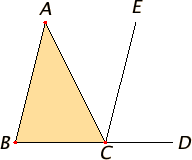

Book I. Proposition 32
Proposition I.32. In any triangle, if one of the sides is produced, then the exterior angle equals the sum of the two interior and opposite angles, and the sum of the three interior angles of the triangle equals two right angles.
Proof. Let ABC be a triangle, and let one side of it BC be produced to D.
I say that the exterior angle ACD equals the sum of the two interior and opposite angles CAB and ABC, and the sum of the three interior angles of the triangle ABC, BCA, and CAB equals two right angles.
Draw CE through the point C parallel to the straight line AB. I.13
Since AB is parallel to CE, and AC falls upon them, therefore the alternate angles BAC and ACE equal one another. I.29
Again, since AB is parallel to CE, and the straight line BD falls upon them, therefore the exterior angle ECD equals the interior and opposite angle ABC.I.29
But the angle ACE was also proved equal to the angle BAC. Therefore the whole angle ACD equals the sum of the two interior and opposite angles BAC and ABC.
Add the angle ACB to each. Then the sum of the angles ACD and ACB equals the sum of the three angles ABC, BCA, and CAB. C.N.2
But the sum of the angles ACD and ACB equals two right angles. Therefore the sum of the angles ABC, BCA, and CAB also equals two right angles. I.13, C.N.1
Therefore in any triangle, if one of the sides is produced, then the exterior angle equals the sum of the two interior and opposite angles, and the sum of the three interior angles of the triangle equals two right angles. □
Alternative proof
Definition 37 Let ΔABC be a triangle. The angles ∠CAB, ∠ABC, and ∠BCA are interior angles of the triangle. An exterior angle of the triangle is an angle that forms a linear pair with one of the interior angles (see Figure 2.1)
Theorem (Angle Sum Theorem). The sum of the angles of a triangle is 180°.
Proof. Given triangle ABC, draw the line XY though A parallel to BC, as shown. Consider AB as a transversal for the parallel lines XY and BC, then by the alternate angle theorem x = u and similary y = v. Consequently,
x + y + w = u + v + w = 180. □
Theorem (The Exterior Angle Theorem). An exterio angle of a triangle is equal to the sum of the opposite interior angles.
Proof. In the fig. above, we have y + z = 180 = y + x + w, so z = x + w. □